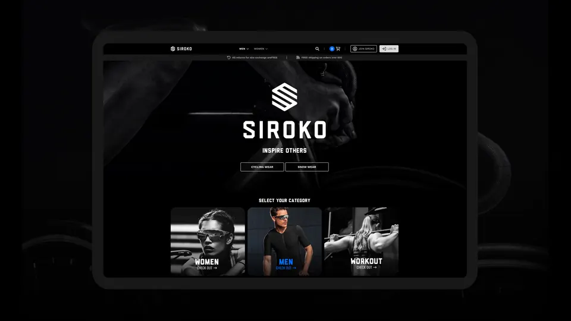
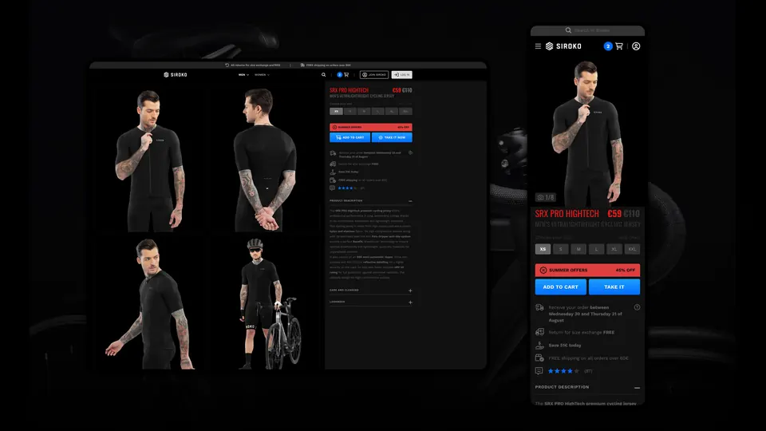
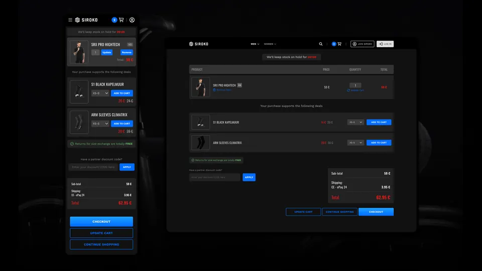

05 — UX/UI · E-commerce
Siroko
Siroko, una conocida marca de ropa de ciclismo y deporte, perdía ventas por una alta tasa de abandono de carrito. El problema era el propio flujo de compra: distraía, estaba saturado y era fácil abandonarlo.

Resumen
Siroko vende ropa de ciclismo y outdoor a través de su propia tienda online. La marca había logrado mucho tráfico e interés, pero una alta tasa de abandono tras añadir productos al carrito le estaba costando ventas en silencio.
El culpable era el flujo de compra: demasiado ruido visual compitiendo con lo único que importaba, llevar al usuario al checkout.
Reto
- 01Los usuarios añadían productos al carrito y luego abandonaban antes de completar el checkout, a un ritmo que la marca no podía ignorar.
- 02Las páginas de producto y carrito existentes estaban visualmente recargadas, sin un camino claro que guiara al usuario.
- 03Había que abordar tanto móvil como escritorio, ya que ambos mostraban comportamientos muy distintos.
- 04Cualquier solución debía proteger —y a ser posible mejorar— las oportunidades de venta cruzada de accesorios, no solo agilizar el embudo.
Proceso
La solución empezó con investigación, no con suposiciones sobre lo que parecía recargado. Después rediseñé el recorrido desde el primer clic hasta el checkout: una home guiada por categorías, una página de producto con un selector de talla claro y una única acción principal de compra, y un carrito que reserva el stock, sugiere artículos complementarios y facilita encontrar los gastos de envío y los códigos de descuento.




Solución
Páginas de producto y carrito rediseñadas —móvil y escritorio— con un camino de checkout simplificado, una tipografía renovada y un sistema de retícula de 8 px, y animaciones Lottie en los botones de compra probadas con A/B testing.
Impacto